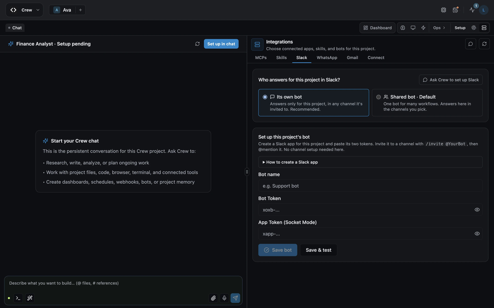
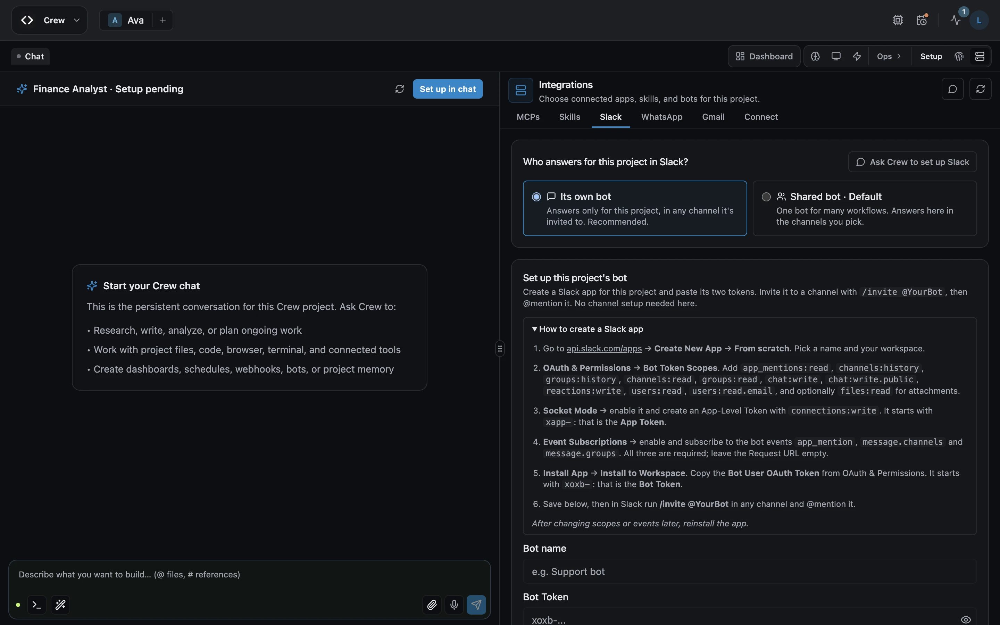
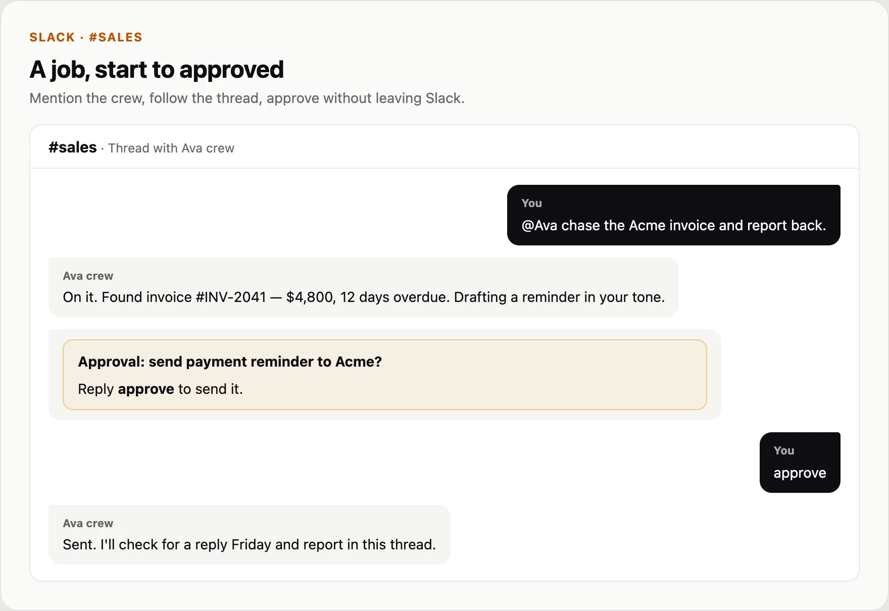

AgentWorks guide
Talk to your crew in Slack
Mention them, follow the thread, approve in place

Demo data

Demo data

Demo data
Demo data

Your crew is in Slack.
Next: talk to your crew on WhatsApp
To talk to a crew member in Slack, open their Integrations.
Choose Slack. We recommend giving them their own bot, so they answer only as themselves, in any channel they're invited to.
Create a Slack app for them.
The exact steps and permissions are listed right here.
Paste its two tokens, then choose Save and test.
Now invite them to a channel, and mention them.
They reply in the thread, and anything important waits for your approval, right there in Slack.